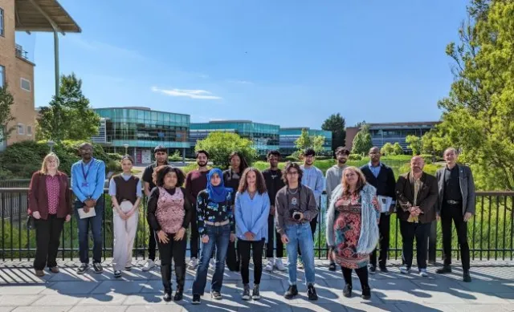

Research Internships for Minority Ethnic Students (RIMES)
Published on - Skem News, Edge Hill University

Assisted a research team in Department of Psychology which uses corpus linguistics to study newspaper attitudes towards autism and climate-change activism (in particular the activist Greta Thunburg).
These projects have links to the United Nations Sustainable Development Goals. My role involved developing methods for visualisation of the datasets produced in both the projects as well as using a data-driven approach to get results on the web. Read More